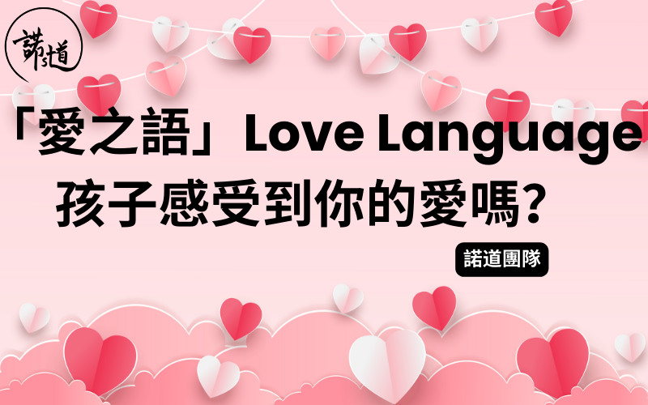

「愛之語」Love Language - 孩⼦感受到你的愛嗎 ?
撰文：諾道團隊
已更新：15分鐘前

愛是⼈類最基本的需求，在每個⼈內⼼都有個「情緒的箱⼦」需要⽤愛來填滿。
對於年幼的孩⼦，「情緒的箱⼦」能否被填滿與健康成長有著莫⼤關係。當孩⼦被愛的需求得到滿⾜時，其安全感、⾃我價值感及⾃尊感也會提升，讓他有勇氣探索世界、⾯對成長的挑戰，並願意以正⾯的⾏為來回應他⼈的愛。相反，⼀旦「情緒的箱⼦」經常是等著被填滿，由於希望但並未得到成⼈的關注，便容易出現我們眼中的「問題⾏為」︔長時間下來，孩⼦內⼼會產⽣對⾃我價值的懷疑，為成長帶來負⾯影響。
那到底該如何愛孩⼦︖
真愛是無條件的，即是完全的愛︔代表⽗母接納並肯定孩⼦原來的樣⼦。無論孩⼦做什麼或不做什麼，⽗母仍然選擇愛他，即便不完全贊同他所有的⾏為。現實是，我們容易不為意地向孩⼦表達了有條件的愛，即讚賞是建基於孩⼦的⾏為︔例如他表現傑出時才會得到嘉許或獎勵，這樣孩⼦感受不到真正被愛，久⽽久之會令其⾃我價值降低，漸漸失去安全感。
要讓孩⼦接收到來⾃你無條件的愛，就要說對孩⼦的「愛之語」，才能與他連結起來。每個孩⼦都有⾃⼰獨有傳達及感受愛的⽅式，若家長能⽤對孩⼦的「愛之語」，所付出的愛將有加倍效果。「愛之語」可分為五種：
第⼀種：精⼼的時刻
⼀段完全專注於彼此的時間，⽤⼼陪伴
例⼦：放下⼿機⼀起吃飯
第⼆種：肯定的⾔詞
⽤具體的⿎勵或讚美說話來肯定對⽅
例⼦：「你幫忙做家務，真是⼀個細⼼又幫得⼿的孩⼦！」
第三種：貼⼼的禮物
送贈符合對⽅需要的禮物，可以是有形或無形的
例⼦：顏⾊筆⽤完了，媽媽為仔仔購買⼀盒新的
第四種：服務的⾏動
為對⽅做⼀件事，哪怕是微⼩的舉動
例⼦：平⽇忙於⼯作的爸爸為孩⼦煮⼀頓飯
第五種：身體的接觸
友善的肢體觸碰去傳達愛、安撫、安全感
例⼦：每天睡前擁抱1分鐘
你可嘗試⽤以下兩種⽅式來找出你孩⼦的主要「愛之語」
1. 多觀察孩⼦最常向⼈表達愛的⽅式
2. 想想孩⼦最常向你提出什麼要求。他喜歡擁抱、拖⼿(身體的接觸)?希望你陪他玩(精⼼的時刻)?還是渴望聽到你的讚賞(肯定的⾔詞)?
當找到孩⼦主要的「愛之語」後，不防持續透過這些⽅式表達愛。當然，其他的「愛之語」都可運⽤在孩⼦身上，這樣既可讓孩⼦學習更多愛的⽅式，也可建⽴更親密的親⼦關係。
當「情緒的箱⼦」被填得滿滿時，孩⼦對於接受家長的教導會有更⾼的認同感。管教是出於愛，所以管教其實是愛的⾏動。孩⼦愈覺得被愛，管教孩⼦也愈容易。下⼀次，在⾯對孩⼦的「問題⾏為」時，先問問⾃⼰：「孩⼦⾏為背後的需要是什麼︖」、「他的情緒箱⼦是否快空了︖」當了解到孩⼦的需要，就先花時間與孩⼦相處，向他表達「愛之語」，再來做管教的⼯作吧！
參考資料：蓋瑞‧巧⾨與羅斯．⽢伯（2000）。《兒童愛之語—打開親⼦愛的頻道》。中國主⽇學協會出版部
把這篇⽂章分享給身邊跟你同樣關⼼孩⼦成長的朋友，讓我們⼀起和孩⼦健康快樂地成長。
如有任何問題或需要幫忙，歡迎你跟諾道團隊聯絡，我們樂意為你提供協助！